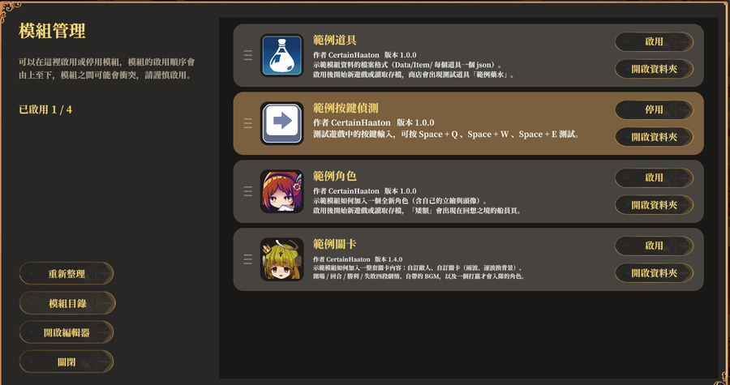
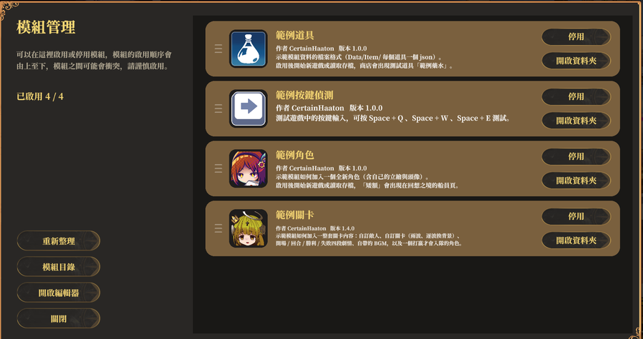
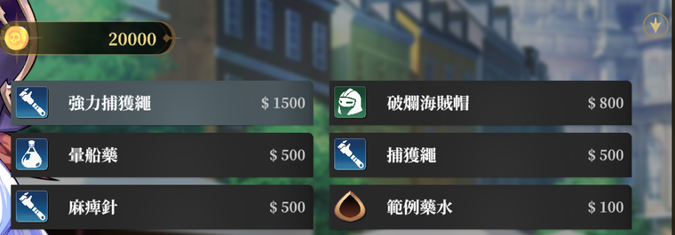

はじめに
目標：5分で動くMODを1つ作り、流れ全体が通ることを確認します。
1. MODフォルダを見つける
MODはゲームのインストール先に置きます：
<ゲームのインストールフォルダ>/Pirate_Data/StreamingAssets/Mods/手っ取り早い方法：ゲーム起動 → タイトル画面 → MOD管理 → フォルダを開く。 ゲームが直接開いてくれます。

左下のMODディレクトリは
Mods/ を直接開きます。
Modsフォルダが無い場合
自分で作れば大丈夫です。名前は正確に
タイトル画面にMOD管理ボタン自体が無い場合、そのビルドはMOD非対応です — スマホ版と体験版には機能がありません。
Mods にしてください。タイトル画面にMOD管理ボタン自体が無い場合、そのビルドはMOD非対応です — スマホ版と体験版には機能がありません。
2. MODフォルダを作る
Mods/ の中にフォルダを作ります。名前は自由ですが、
英数字を推奨、スペースは避けてください：
Mods/
└── MyFirstMod/
フォルダ名がMODの識別子です
ゲームは「このMODが有効かどうか」をフォルダ名で記憶しています。
名前を変えると別のMODになり、有効状態がリセットされてプレイヤーが 入れ直すことになります。公開後は変更しないでください。
名前を変えると別のMODになり、有効状態がリセットされてプレイヤーが 入れ直すことになります。公開後は変更しないでください。
3. mod.json を書く
MODフォルダの中に mod.json を作ります。
このファイルが無いとMODとして認識されず、一覧にも出ません。
{
"name": "はじめてのMOD",
"author": "あなたの名前",
"version": "1.0",
"description": "テスト用。とても強いポーションを追加します。"
}すべての項目は省略可能で、欠けた場合は既定値になります。詳細は mod.json の項目 を参照。
4. データを1件追加する
データは Data/<テーブル名>/ の下に置き、
JSONファイル1つが1件です。アイテムの例：
MyFirstMod/
├── mod.json
└── Data/
└── Item/
└── SuperPotion.jsonSuperPotion.json の中身：
{
"Name": "SuperPotion",
"Name_I2": "スーパーポーション",
"Desc": "飲むととても強くなる",
"Type": "アイテム",
"AddHP": 999
}
フォルダ名で対象テーブルが決まります
ファイル名は関係ありません — ゲームが見るのは中身の
Data/Item/ はアイテム表、Data/Role/ はキャラ表です。Item でも TheItem でも受け付けます
（ゲームが自動で The を補います）。ファイル名は関係ありません — ゲームが見るのは中身の
Name 項目です。
5. 有効化してテスト
有効化前 — 灰色、ボタンは有効化

有効化後 — 金色、ボタンは無効化並び順が適用順（上から下）。左の三本線をドラッグで並べ替えられます — MOD同士が競合したときにどちらが勝つかはこれで決まります （複数MODの共存 参照）。
- ゲームに戻り、タイトル画面 → MOD管理
- 「はじめてのMOD」を見つけて有効化を押す
- タイトル画面に戻り、「新しい周回を始める」か「セーブを読み込む」
- ショップを確認 —「スーパーポーション」があるはずです
タイトルから入り直すと反映されます
MODデータは新規開始とセーブ読み込みの2つのタイミングで
マージされます。ファイルを編集したりMODを切り替えたら、タイトルに戻ってもう一度入るだけ
— ゲームの再起動は不要です。
進行中のセッションには反映されないので、タイトルに戻る必要があります。
進行中のセッションには反映されないので、タイトルに戻る必要があります。
うまくいきましたか？

自作アイテムも同じように出ます（
SellPrice を設定していれば）。
新アイテムが見えた → 流れ全体が通っています
次は ゲームデータの編集 で、既存内容の変更方法と
利用できる項目を確認してください。
見えない → トラブル対処へ
トラブル対処 にエラーメッセージ対応表と
症状別チェックがあります。9割はJSONの書式ミス（カンマの過不足）です。
完全なMODの構成
全機能を使ったMODの構造：
MyMod/
├── mod.json 名刺ファイル（必須）
├── icon.png 一覧のサムネイル（任意）
├── Data/ データテーブル
│ ├── Item/
│ │ └── SuperPotion.json
│ ├── Role/
│ │ └── NewHero.json
│ └── Skill/
│ └── MegaSlash.json
├── Images/ 画像
│ ├── RoleHead/
│ │ └── NewHero.png
│ └── Role/
│ └── NewHero.png
└── Music/ 音声
├── BGM/
│ └── BGM_MyTheme.ogg
└── Sfx/
└── se_MyHit.ogg各部分の詳細は以降の章で解説します。